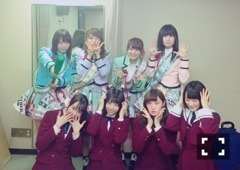
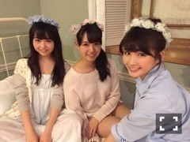

| 2015/12 28 Mon | ひめたん-0o0-その600 |

600回目ー！
いつも読んでくれて
ありがとうございます( ˇωˇ )
これからもよろしくね！
さて、この土日は名古屋で握手会でした～
さっき貼った写メは
1部・4部で着た
ルームウェア(´,,•ω•,,｀)
サンタさんも着たのですが
写真撮れなかった......ごめんね。
だから来てくれた人だけの特権♪
ライブ・イベント・ラジオの感想
新鮮で楽しい時間でした！
名古屋といえば最近
ボンバーイーのオンエアもあったから
そのお話も多かったかな。
名古屋での握手会は夏以来ということで
とても久々になってしまった方も
いらっしゃったね～
年内最後の握手会だったので
今年一年ありがとうの気持ちと
来年もよろしくねのご挨拶が出来て
良かったです( ˇωˇ )～♪
直接お話できる時間は久々だったから
やっぱり言葉で伝えられる握手会って
いいなあって。
あたたかい言葉をたくさんかけてもらって
ほっこりしました(´,,•ω•,,｀)
今年ひめたんと出会えました！
今年ひめたんのこともっと知れました！
そんな風に言ってくださる度に
2015年も素敵な一年だったなあ
実のある時間を過ごせて幸せだったなあ
そんなことを実感するのでした
ひとりでいると時間ってあっという間に
過ぎてしまう気がするから
振り返ることないまま
来年を迎えるとこだったよ～
改めて、今年一年
私に携わってくれた方すべてに感謝です
ありがとうございました！！
土曜日の全握は
みり愛とペアでした♡
すだれ姉妹
みり愛ファンの皆さん
仲良くしてくれてありがとう～！
そのあとはらじらー！サンデー
公開生放送でした～

デッドストックダイヤモンド
松村さん、斉藤さん、山内さん、谷さん
と私たち乃木坂ちゃん～♪
声優アーツには鳴海杏子さんが
来てくださいました。
20時台、21時台、22時台で
まったく違った空気感のらじらー！、
冒頭で中田さんも仰っていた通り
メモリアルな回になったんではないかしら。
きいちゃん、生駒ちゃん、かなりん
来てくれてありがとうね(´｡•ω•｡`)
NHKに来てくださった皆さんも
ラジオを聞いてくれた皆さんも
ありがとうございました！
来年もよろしくお願いします～♪

FLASHスペシャル
たくさんのメンバーが載ってます！
是非見てみてね⊂( ˆωˆ )⊃
ソニレコもよろしくね～♪
リトグリちゃん(´｡•ω•｡`)がお～

年内にもう一回更新出来たらいいなあ。
その時は改めて
今年のこと振り返ってみたいなあ
来年になったらごめんなさい。笑
(＊´・ω・＊)
コメント(641)
2015/12/28 23:48